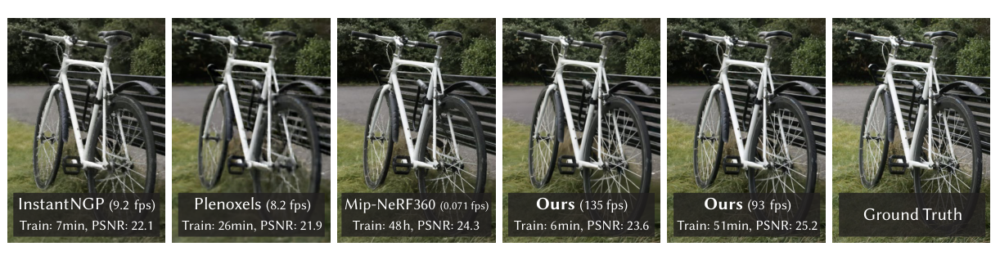
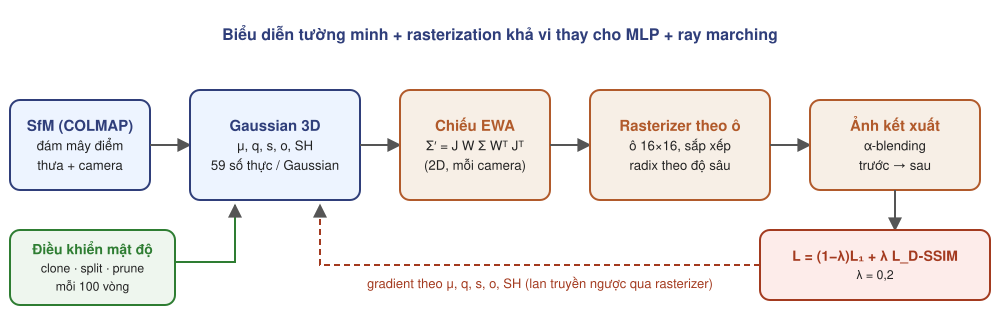
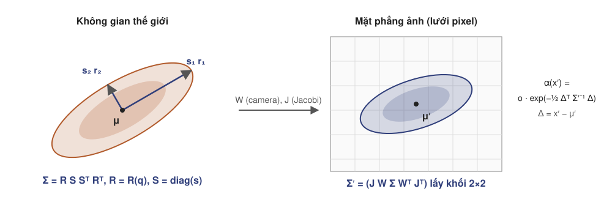
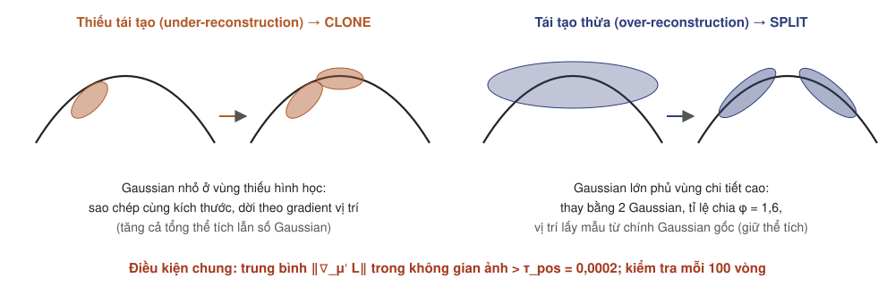
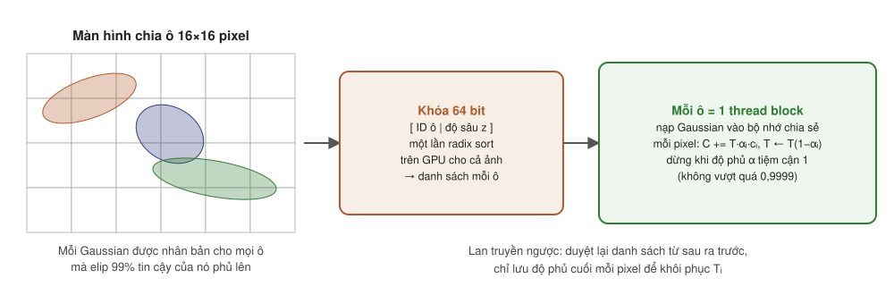
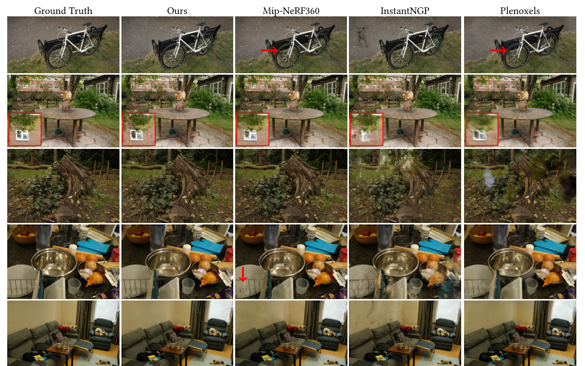
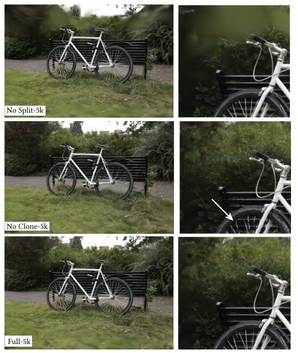
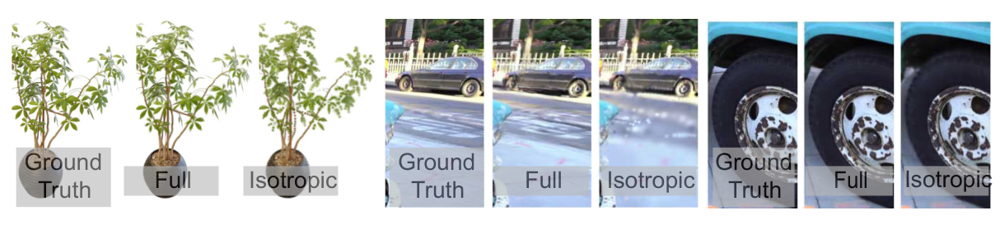
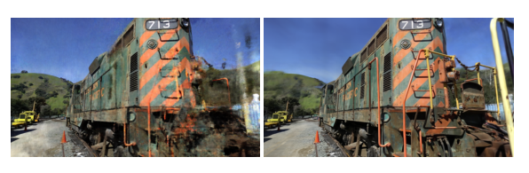
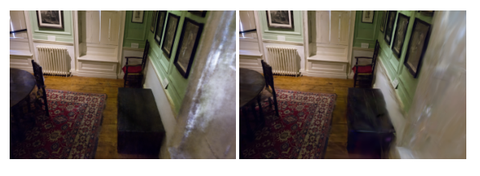

Kerbl, Kopanas, Leimkühler, Drettakis · SIGGRAPH 2023 (ACM TOG 42(4))
Seminar nhóm nghiên cứu tái tạo 3D · Tháng 9/2026

| Họ phương pháp | Biểu diễn | Kết xuất một pixel | Hệ quả |
|---|---|---|---|
| NeRF, Mip-NeRF 360 | MLP lớn | hàng trăm lượt gọi MLP dọc tia | 48 giờ huấn luyện, < 1 fps |
| Instant-NGP | lưới băm + MLP nhỏ | ray marching, bỏ qua vùng trống | vài phút huấn luyện, ≈ 10 fps |
| Plenoxels (chuyên đề 03) | lưới voxel thưa, SH | ray marching, nội suy ba tuyến tính | ≈ 25 phút, ≈ 10 fps, chất lượng thấp hơn |
| Điểm nơ-ron (Pulsar, ADOP) | điểm + đặc trưng | rasterization điểm, mạng CNN | cần MVS, dễ lỗ hổng hoặc nhòe |
| 3DGS | Gaussian 3D bất đẳng hướng | chiếu, sắp xếp theo ô, alpha blending | 134–197 fps, 5–42 phút |

Biểu diễn: tường minh, không cấu trúc, khả vi.
Tối ưu: xen kẽ gradient và điều khiển mật độ.
Kết xuất: rasterizer theo ô, nhận biết hiển thị.

Luôn nửa xác định dương, khác với tối ưu trực tiếp $\Sigma$.
| Tham số | Số thực | Kích hoạt |
|---|---|---|
| tâm $\boldsymbol\mu$ | 3 | — |
| tỉ lệ $\mathbf s$ | 3 | $\exp$ |
| quaternion $\mathbf q$ | 4 | chuẩn hóa |
| độ phủ $o$ | 1 | sigmoid |
| SH bậc 3 (RGB) | 48 | — |
| Tổng | 59 |
Bỏ hàng và cột thứ ba của $\Sigma'$ để được ma trận $2\times2$.
$\mathbf d_i$: hướng từ camera tới tâm Gaussian.
| NeRF | 3DGS | |
|---|---|---|
| Biểu diễn | ẩn, liên tục (MLP) | tường minh, rời rạc, không cấu trúc |
| Mật độ và màu | $\sigma(\mathbf x)$, $\mathbf c(\mathbf x,\mathbf d)$ từ mạng | $o_i$ và SH lưu trực tiếp trên từng Gaussian |
| Tìm phần tử đóng góp | lấy mẫu dọc tia, kể cả vùng trống | chiếu và cắt theo ô, chỉ phần tử nhìn thấy |
| Độ mờ đục mỗi phần tử | $1-e^{-\sigma_i\delta_i}$ trên đoạn tia | $o_i\,G'(\mathbf x')$ trên ảnh |
| Thứ tự | chính xác theo $t$ dọc tia | xấp xỉ theo độ sâu tâm, một lần cho cả ô |
| Mở rộng không gian | cần co không gian (contraction) cho cảnh vô hạn | Gaussian ở mọi khoảng cách, không cần co |

Mỗi 100 vòng: Gaussian có trung bình $\|\nabla_{\boldsymbol\mu'}\mathcal L\|\gt\tau_{\text{pos}}=0{,}0002$.
Nhỏ: sao chép, dời theo gradient. Lớn: thay bằng 2, chia tỉ lệ cho $\phi=1{,}6$.
Xóa khi $\alpha\lt\epsilon_\alpha$ hoặc quá lớn; đặt lại $\alpha\approx0$ mỗi 3000 vòng.

Loại sớm: elip tin cậy 99% ngoài khung nhìn; vị trí cực đoan bị loại bằng dải bảo vệ (guard band).
Một lần sắp xếp: radix sort theo khóa [ID ô | độ sâu] cho cả ảnh, không sắp xếp theo từng pixel.
$S_i=\sum_{k\gt i}T_k\alpha_k\mathbf c_k$ là màu đóng góp sau Gaussian $i$.
Mip-NeRF 360 (9), Tanks&Temples (2), Deep Blending (2).
8 cảnh, nền trắng.
RTX A6000, cùng siêu tham số cho mọi cảnh.
| Phương pháp | SSIM ↑ | PSNR ↑ | LPIPS ↓ | Huấn luyện | FPS | Bộ nhớ |
|---|---|---|---|---|---|---|
| Plenoxels | 0,626 | 23,08 | 0,463 | 25 ph 49 s | 6,79 | 2,1 GB |
| INGP-Base | 0,671 | 25,30 | 0,371 | 5 ph 37 s | 11,7 | 13 MB |
| INGP-Big | 0,699 | 25,59 | 0,331 | 7 ph 30 s | 9,43 | 48 MB |
| Mip-NeRF 360† | 0,792 | 27,69 | 0,237 | 48 h | 0,06 | 8,6 MB |
| 3DGS-7K | 0,770 | 25,60 | 0,279 | 6 ph 25 s | 160 | 523 MB |
| 3DGS-30K | 0,815 | 27,21 | 0,214 | 41 ph 33 s | 134 | 734 MB |
| Phương pháp | Tanks&Temples | Deep Blending | ||||||||
|---|---|---|---|---|---|---|---|---|---|---|
| SSIM | PSNR | LPIPS | Huấn luyện | FPS | SSIM | PSNR | LPIPS | Huấn luyện | FPS | |
| Plenoxels | 0,719 | 21,08 | 0,379 | 25 ph 5 s | 13,0 | 0,795 | 23,06 | 0,510 | 27 ph 49 s | 11,2 |
| INGP-Base | 0,723 | 21,72 | 0,330 | 5 ph 26 s | 17,1 | 0,797 | 23,62 | 0,423 | 6 ph 31 s | 3,26 |
| INGP-Big | 0,745 | 21,92 | 0,305 | 6 ph 59 s | 14,4 | 0,817 | 24,96 | 0,390 | 8 ph | 2,79 |
| Mip-NeRF 360 | 0,759 | 22,22 | 0,257 | 48 h | 0,14 | 0,901 | 29,40 | 0,245 | 48 h | 0,09 |
| 3DGS-7K | 0,767 | 21,20 | 0,280 | 6 ph 55 s | 197 | 0,875 | 27,78 | 0,317 | 4 ph 35 s | 172 |
| 3DGS-30K | 0,841 | 23,14 | 0,183 | 26 ph 54 s | 154 | 0,903 | 29,41 | 0,243 | 36 ph 2 s | 137 |

| Phương pháp | Mic | Chair | Ship | Materials | Lego | Drums | Ficus | Hotdog | TB |
|---|---|---|---|---|---|---|---|---|---|
| Plenoxels | 33,26 | 33,98 | 29,62 | 29,14 | 34,10 | 25,35 | 31,83 | 36,81 | 31,76 |
| INGP-Base | 36,22 | 35,00 | 31,10 | 29,78 | 36,39 | 26,02 | 33,51 | 37,40 | 33,18 |
| Mip-NeRF | 36,51 | 35,14 | 30,41 | 30,71 | 35,70 | 25,48 | 33,29 | 37,48 | 33,09 |
| Point-NeRF | 35,95 | 35,40 | 30,97 | 29,61 | 35,04 | 26,06 | 36,13 | 37,30 | 33,30 |
| 3DGS-30K | 35,36 | 35,83 | 30,80 | 30,00 | 35,78 | 26,15 | 34,87 | 37,72 | 33,32 |
100k Gaussian đều trong hộp bao → tự rút còn 6–10k → 200–500k sau 30k vòng. Kết xuất 180–300 fps.
Cao nhất trung bình nhưng chênh lệch nhỏ (0,02 dB so với Point-NeRF); không thắng Mic, Lego, Ficus.
| Cấu hình | Truck 5K | Garden 5K | Bicycle 5K | Truck 30K | Garden 30K | Bicycle 30K | TB 30K |
|---|---|---|---|---|---|---|---|
| Limited-BW | 14,66 | 22,07 | 20,77 | 13,84 | 22,88 | 20,87 | 19,19 |
| Random Init | 16,75 | 20,90 | 19,86 | 18,02 | 22,19 | 21,05 | 20,42 |
| No-Split | 18,31 | 23,98 | 22,21 | 20,59 | 26,11 | 25,02 | 23,90 |
| No-SH | 22,36 | 25,22 | 22,88 | 24,39 | 26,59 | 25,08 | 25,35 |
| No-Clone | 22,29 | 25,61 | 22,15 | 24,82 | 27,47 | 25,46 | 25,91 |
| Isotropic | 22,40 | 25,49 | 22,81 | 23,89 | 27,00 | 24,81 | 25,23 |
| Full | 22,71 | 25,82 | 23,18 | 24,81 | 27,70 | 25,65 | 26,05 |


Đẳng hướng (chỉ một bán kính): 25,23 so với 26,05 dB trung bình ở 30K. Gaussian bất đẳng hướng bám theo bề mặt và cấu trúc mảnh với cùng số phần tử.
Từ đám mây điểm của Zhang et al. (2022), đạt PSNR của họ trong 2–4 phút với khoảng 1/4 số điểm: 3,8 MB so với 9 MB (SH bậc 2).
| Phương pháp | Kết xuất | PSNR Mip-NeRF 360 | LPIPS | FPS | PSNR Deep Blending | FPS |
|---|---|---|---|---|---|---|
| 3DGS* | rasterization | 28,69 | 0,22 | 293 | 29,41 | 319 |
| Mip-Splatting | rasterization | 29,39 | 0,20 | 241 | 29,47 | 260 |
| 3DGS-MCMC | rasterization | 29,72 | 0,19 | 302 | 29,71 | 662 |
| 3DGRT | dò tia Gaussian | 28,71 | 0,25 | 78 | 29,23 | 119 |
| RadFoam | dò tia Voronoi | 28,47 | 0,21 | 200 | 28,95 | 301 |
| Mip-NeRF 360 | ray marching MLP | 29,23 | 0,21 | < 1 | 29,40 | < 1 |
popping, thứ tự xấp xỉ
hàng trăm MB, > 20 GB khi huấn luyện
không có bề mặt rõ ràng
ngưỡng densify, SfM, camera lỗ kim


| Đại lượng | Giá trị | Nguồn |
|---|---|---|
| Mô hình Mip-NeRF 360 (30K) | 734 MB ≈ 3,1 triệu Gaussian | Bảng 1; ước lượng của nhóm |
| Bộ nhớ GPU đỉnh khi huấn luyện cảnh lớn | có thể vượt 20 GB | §7.4 |
| Bộ nhớ thêm cho rasterizer khi kết xuất | 30–500 MB | §7.4 |
| So sánh: Mip-NeRF 360 / INGP-Big | 8,6 MB / 48 MB | Bảng 1 |
| Vấn đề | Phương pháp | Ý tưởng |
|---|---|---|
| Răng cưa khi đổi tỉ lệ | Mip-Splatting (CVPR 2024) | lọc làm trơn 3D và bộ lọc mip 2D |
| Heuristic densify | 3DGS-MCMC (NeurIPS 2024) | cập nhật kiểu Langevin, số Gaussian cố định |
| Popping | StopThePop (TOG 2024) | sắp xếp theo từng pixel |
| Thứ tự, camera tổng quát | 3DGRT (SIGGRAPH Asia 2024) | dò tia Gaussian bằng BVH phần cứng |
| Bộ nhớ | LightGaussian, Scaffold-GS | cắt tỉa, lượng tử hóa, neo theo lưới |
| Bề mặt | SuGaR, 2DGS | ép Gaussian thành surfel phẳng |
| Cảnh động | 4D Gaussian Splatting (CVPR 2024) | trường biến dạng theo thời gian |
| Cấu trúc hóa không gian | RadFoam (2025) | bọt Voronoi, dò tia chính xác, không chồng lấn |
| Thành phần | Công thức hoặc giá trị | Vai trò |
|---|---|---|
| Nguyên thủy | $\boldsymbol\mu,\;\Sigma=RSS^\top R^\top,\;o,\;$SH (59 số thực) | biểu diễn tường minh, khả vi |
| Chiếu | $\Sigma'=JW\Sigma W^\top J^\top$ | Gaussian 2D dạng đóng |
| Tạo ảnh | $C=\sum_i\mathbf c_i\alpha_i\prod_{j\lt i}(1-\alpha_j)$ | giống NeRF, thứ tự theo độ sâu tâm |
| Mật độ | clone, split ($\phi=1{,}6$), prune, reset mỗi 3000 vòng | từ SfM thưa tới hàng triệu Gaussian |
| Rasterizer | ô 16×16, một lần radix sort, dừng ở 0,9999 | 134–197 fps ở 1080p |